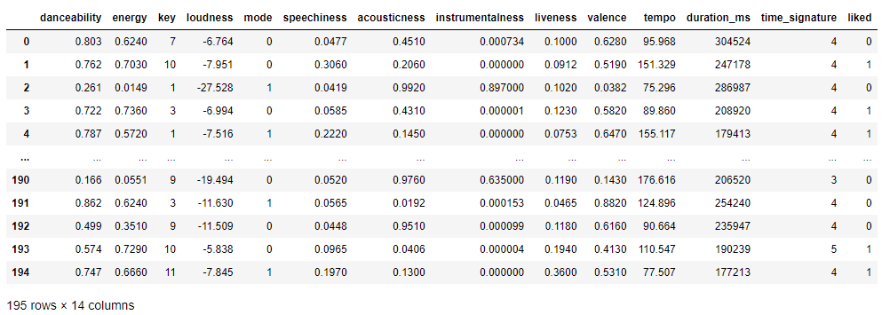
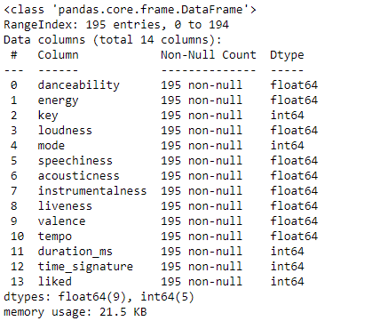
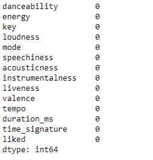
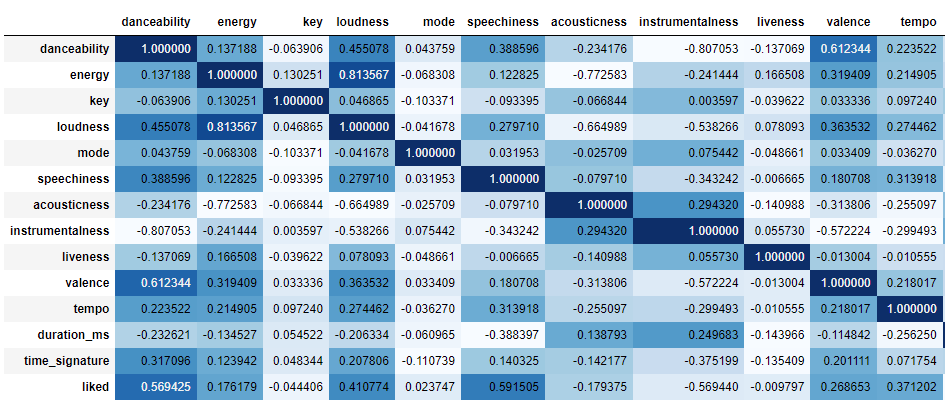
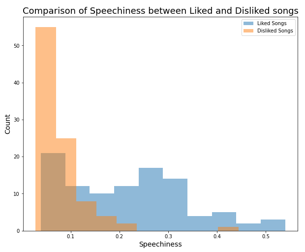
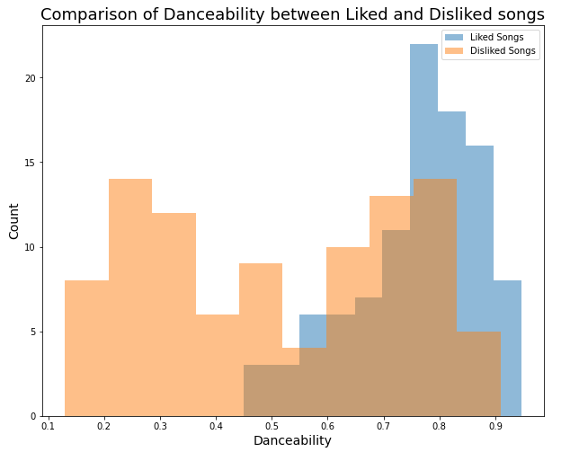
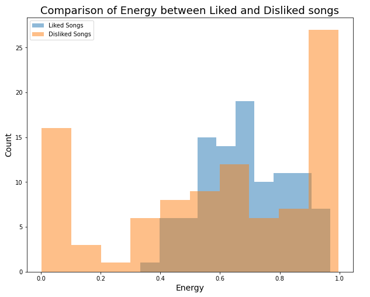
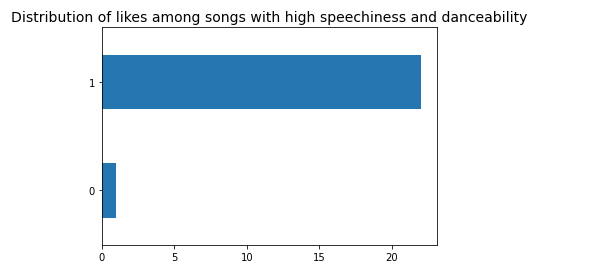
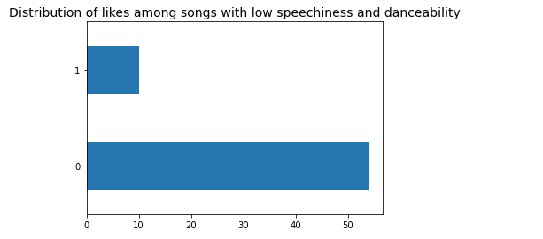
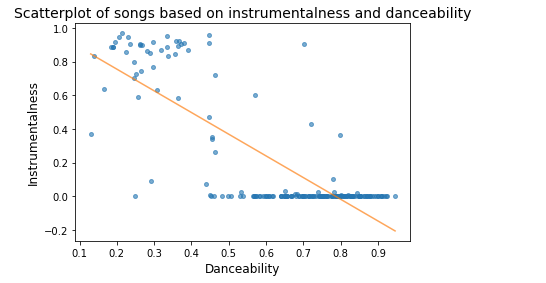

Import statements:
import numpy as np
import pandas as pd
import matplotlib.pyplot as plt
from scipy.stats import linregress
from sklearn.model_selection import train_test_split
Reading in the dataset:
df = pd.read_csv('data.csv')
df

Exploring the dataset:
df.info()

df.isna().sum()

df[df.duplicated()]
Correlation between features:
df.corr().style.background_gradient(cmap='Blues')

Visualising the comparison of features between liked and disliked songs:
liked = df['liked'] == 1
disliked = df['liked'] == 0
liked_songs = df[liked]
disliked_songs = df[disliked]
plt.figure(figsize=(10,8))
plt.hist(liked_songs['speechiness'], alpha=0.5, label='Liked Songs')
plt.hist(disliked_songs['speechiness'], alpha=0.5, label='Disliked Songs')
plt.xlabel('Speechiness', fontsize=14)
plt.ylabel('Count', fontsize=14)
plt.title('Comparison of Speechiness between Liked and Disliked songs', fontsize=18)
plt.legend()

plt.figure(figsize=(10,8))
plt.hist(liked_songs['danceability'], alpha=0.5, label='Liked Songs')
plt.hist(disliked_songs['danceability'], alpha=0.5, label='Disliked Songs')
plt.xlabel('Danceability', fontsize=14)
plt.ylabel('Count', fontsize=14)
plt.title('Comparison of Danceability between Liked and Disliked songs', fontsize=18)
plt.legend()

plt.figure(figsize=(10,8))
plt.hist(liked_songs['energy'], alpha=0.5, label='Liked Songs')
plt.hist(disliked_songs['energy'], alpha=0.5, label='Disliked Songs')
plt.xlabel('Energy', fontsize=14)
plt.ylabel('Count', fontsize=14)
plt.title('Comparison of Energy between Liked and Disliked songs', fontsize=18)
plt.legend()

Combining two features to find more causation:
high_speechiness = df['speechiness'] > 0.3
high_danceability = df['danceability'] > 0.6
songs_with_high_dance_and_speech = df[high_speechiness & high_danceability]
plt.title('Distribution of likes among songs with high speechiness and danceability',
fontsize=14)
songs_with_high_dance_and_speech['liked'].value_counts().sort_values().plot(kind='barh')
songs_with_low_dance_and_speech = df[~high_speechiness & ~high_danceability]
plt.title('Distribution of likes among songs with low speechiness and danceability', fontsize=14)
songs_with_low_dance_and_speech['liked'].value_counts().plot(kind='barh')


Correlation between danceability and instrumentalness:
plt.plot(df['danceability'], df['instrumentalness'], 'o', markersize=4, alpha=0.6)
xs = df['danceability']
ys = df['instrumentalness']
res = linregress(xs, ys)
fx = np.array([xs.min(), xs.max()])
fy = res.slope * fx + res.intercept
plt.plot(fx, fy, '-', alpha=0.7)
plt.title('Scatterplot of songs based on instrumentalness and danceability', fontsize=14)
plt.xlabel('Danceability', fontsize=12)
plt.ylabel('Instrumentalness', fontsize=12)

Random Forest Classifier model prediction:
x, y = df.drop('liked', axis=1), df['liked']
x_train, x_test, y_train, y_test = train_test_split(x, y, test_size=0.3, random_state=1)
model = RandomForestClassifier(n_estimators=100, max_depth=5, random_state=1)
model.fit(x_train, y_train)
predictions = model.predict(x_test)
accuracy_score = metrics.accuracy_score(y_test, predictions)
print('Accuracy of the Random Forest Classifier model: {}%'.format(round(accuracy_score,3)*100))